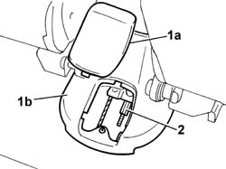
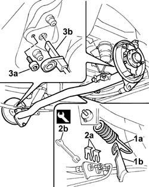
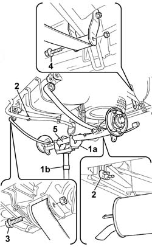
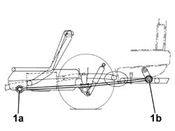

4420D10 rear suspension axle - r+r includes bleeding
- Path
- Procedures > 44 SUSPENSION AND WHEELS > 4420 REAR SUSPENSION > 4420D rear suspension axle/crossbeam > 4420D10 rear suspension axle - r+r includes bleeding
- Kind
- repair procedure (removal / refitting; the operation number is the code)
- Applies to
- all engines; all production periods
- Interactive page
- https://sloeber94.github.io/elrnDB-fDbl/en/#/2584760
Applies to: all engines; all production periods
 Removing
Removing
 Refitting
RefittingPlace the car on a lift.
1. Remove cover (1a) from central tunnel (1b).
2. Partly unscrew the handbrake cable adjustment nut to slacken the cable.

Applies to: all engines; all production periods
Op. 4450B13 REAR WHEELS (TWO) - R.R..
Op. 3320B34 REAR BRAKE DRUMS - R.R..
Disconnect the parking brake cables from the lever on the rear shoes.
Raise the lift.
1. Disconnect load proportioning valve spring (1a) from bracket (1b) on the rear axle.
2. Withdraw clips (2a) and unscrew the brake cable hoses using wrench (2b).
 | Name | Country |
|---|---|---|
2b | Box wrench for brake fittings | 1.856.132.000 |
Position a suitable container near the disconnected hoses to collect the brake fluid. use appropriate plugs to seal the hoses.
Applies to: all engines; all production periods; only with equipment: ABS
3. Unscrew bolt (3a) securing the ABS sensor (3b) (right and left side), then release the cable from the support bracket.

Applies to: all engines; all production periods; only with equipment: ABS
1. Place tool (1a) supported by hydraulic column jack (1b) beneath the rear axle.
| Name | Country |
|---|---|---|
1a | Mount | 1.870.602.000 |
Op. 4420A35 REAR SUSPENSION DAMPERS - R.R. - CHECK WHEEL GEOMETRY SEPARATELY.
Slightly lower the column jack to unload the suspension.
2. Unfasten the rear exhaust pipe section from the support hooks.
3. Undo the lower bolts securing the leaf springs to the body.
4. Undo the rear bolts securing the leaf springs to the shackles.
5. Lower the column jack and remove the rear axle.

Applies to: all engines; all production periods
Refitting
RemovingPosition the rear axle under the vehicle, supported on a column jack and support tool.
| Name | Country |
|---|---|---|
- | Mount | 1.870.602.000 |
Raise the column jack and tighten, without tightening the front leaf spring bolts.
Tighten the rear bolts securing the leaf springs to the shackles without tightening.
Secure the rear exhaust pipe section to the appropriate support hooks.
Slightly compress the suspension by means of the column jack.
Complete op. 4420A35.
Remove the rear axle support tool.
| Name | Country |
|---|---|---|
- | Mount | 1.870.602.000 |
Connect the brake hoses to the rigid pipes secured to the rear axle using a wrench.
| Name | Country |
|---|---|---|
- | Box wrench for brake fittings | 1.856.132.000 |
Fit retaining brackets to the brake pipe fittings.
Connect the load proportioning valve spring to the bracket on the rear axle bracket.
Applies to: all engines; all production periods; only with equipment: ABS
Position the ABS sensors (right and left side), secure with the appropriate bolt and then secure the cables to the support brackets.
 | Fastening | Component | Ø | Value (daNm) |
|---|---|---|---|---|
- | Bolt | ABS REAR WHEEL RPM SENSOR | M6 | 0.7 |
Lower the lift.
Connect the parking brake cables to the rear shoe control lever.
Op. 3320B34 REAR BRAKE DRUMS - R.R..
Op. 4450B13 REAR WHEELS (TWO) - R.R..
Op. 3380A04 HANDBRAKE - ADJUST TRAVEL.
Op. 0010T64 BRAKE AND/OR CLUTCH FLUID CHECK LEVEL AND TOP UP AS NECESSARY.
Applies to: all engines; all production periods; only with equipment: ABS
Op. 0010T66 EXTRAS FOR VERSIONS WITH ABS FOLLOWING OPERATION 0010T65.
Remove the car from the lift.
Carry out final tightening of the rear leaf spring fastenings under theoretical design load conditions. Design load conditions on the front axle are achieved by ballasting the car (carry out this operation with the wheels fitted and the car on the ground or an appropriate lift). This is done by arranging loads in the rear part of the car as described below.
Loads are calculated without the end stop buffer fitted; the values in brackets indicate loads to be applied with the end stop buffer fitted.
Panorama version = 175 kg (350 kg)
Van version = 290 kg (510 kg)
Van version (higher payload) = 440 kg (660 kg).
1. Tighten to torque front bolts (1a) and rear bolts (1b) securing the leaf springs.
| Fastening | Component | Ø | Value (daNm) |
|---|---|---|---|---|
1a | Nut | REAR LEAF SPRING | M16 x 1.5 | (front) 18 |
| Fastening | Component | Ø | Value (daNm) |
|---|---|---|---|---|
1b | Nut | REAR LEAF SPRING | M12 x 1.25 | (rear) 8 |

Topics linked from this page (7)
- 0010T64 brake and or clutch fluid check level and top up as necessary
- 0010T65 hydraulic brake system bleed air
- 0010T66 manual gearbox oil check level and top up if necessary
- 3320B34 Rear brake DRUMS - R.R.
- 3380A04 handbrake - check travel
- 4420A35 rear suspension dampers - r r
- 4450B13 rear wheels(2) r r